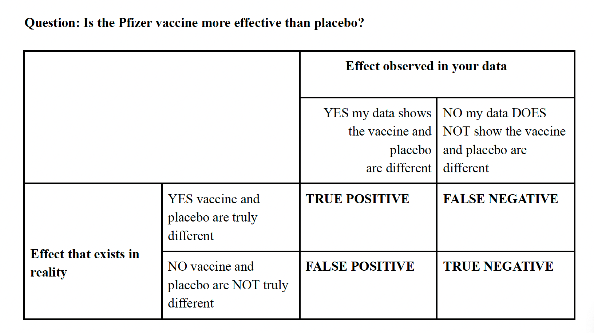

The Science of Asking: How to Formulate Questions and Hypotheses in Research
Asking questions and testing them scientifically is a skill that requires both simplicity in approach and intentional practice. Despite often feeling intuitive, it’s a challenging skill to master. Here, we explore a structured approach to formulate questions and test hypotheses while minimizing bias.
A Short Primer Connecting Scientific Questions to Statistical Conclusions
Asking questions and testing them scientifically is a skill that requires both simplicity in approach and intentional practice. Despite often feeling intuitive, it’s a challenging skill to master. Here, we explore a structured approach to formulate questions and test hypotheses while minimizing bias.
Part 1: Formulating Your Question
The key to asking a scientific question is specificity. Consider the ‘Who, What, Where, When, How, and Why’ of your question. Evaluating the context and underlying assumptions is crucial in minimizing bias.
Example of a Vague Scientific Question: How effective is the Pfizer vaccine?
- Who? Are we talking about a specific age group, sex, health history? Be specific about the group you want to learn about.
- What? Clarify what “effective” means in this context. Are we talking about preventing any infection, any symptoms, or preventing hospitalization or death?
- Where? Choose the location for your study carefully. A study in one country may not be easily generalizable to another.
- When? When will the data be collected and how often will individuals be tested? Are we collecting short or long-term health data? Might data be collected at a time when a particularly nasty COVID variant is prevalent?
- How? How will you collect data? Will you use questionnaires or will you test subjects for COVID? Each method has its own errors and biases
- Why? What is your reason for conducting your experiment? Are people’s lives at stake? The answer to this may affect the amount of error you allow when making conclusions or recommendations.
Part 2: The importance of sampling
The scope of your question will likely be broader than the sample you are actually able to test in your experiment.
Example: Let’s say your question asks about the efficacy of the Pfizer vaccine in preventing COVID-related hospitalization in all adults over 16 years old. Will you be able to test ALL adults over the age of 16? No, you might be able to test as many as 50,000, but that is just a subset of the group you are asking about.
Your question addresses a broader group, but your experiment will only measure a sample of it. This means there are two potential answers:
The effect that exists in reality for the entire group of interest.
The effect observed in your data collected from your sample.
You aim for these answers to be the same, but discrepancies can occur, and that’s not necessarily your fault.
Part 3: How uncertain are we in our results?
After running your experiment and collecting data, it’s important to evaluate the likelihood of inaccuracies.

As a researcher, you are hoping your results match reality (true positive or negative). Through good design and analysis, you hope to minimize and measure the probability your results are different from reality (false positive or negative).
Understanding False Positives and magical, mysterious P-value:
Take your two types of hypotheses:
Alternate hypotheses: There is an effect! Vaccine is more effective than placebo.
Null hypothesis: There is NO effect. Vaccines are equal in efficacy with placebo.
Assuming the null hypothesis is true, the p-value is the probability that you could have gotten your results or something more extremely different by chance. The lower this probability is, the more likely your results represent a true positive (i.e. significantly different experimental groups).
For example, let’s say you have a perfectly fair coin (i.e. the null hypothesis is true and the probability of flipping heads or tails is the same). You flip the coin 10 times and get 2 heads. Doesn’t sound like a fair coin, but what is the probability of flipping 2 heads by chance with a fair coin? About 4.4%. The p value would be the probability of flipping two heads or something more extreme. This would be the sum of the probabilities of flipping 0, 1, 2, 8, 9, and 10 heads, which happens to be ~11% or a p value = 0.11.
Yet another way to think about p-values: Let’s say you run your experiment and have a p-value of 0.05. YAY! It’s a significant difference and I won science and all my grants will get funded! Well…maybe. Once again, let’s assume the null is actually true. And imagine you ran your exact same experiment 100 different times. In 5 of those experiments, by random chance, you would think there is a difference but there really isn’t. How do you know whether your results are part of that rare 5% and your positive results are a random fluke? You don’t. Only replication and higher sample size might help you better figure that out.
So why is 0.05 the magical p-value number of significance? No particularly specific reason. Historically it was recommended by R. Fisher in 1925 out of convenience. Everything had to be calculated by hand at that time anyway.
This threshold is called the alpha value and the researcher should set it based on the amount of risk they are willing to assume if the results are a false positive. That is why the significance threshold should be as low as 0.01 or 0.0001 if you’re testing the safety of a medicine that could possibly result in death.
What about false negatives? Aren’t they powerfully important too?
P-values don’t directly tell us anything about the power of an analysis, which is the ability of our experiment to see an effect that is actually present.
Statistical power = 1 - the probability of a false negative.
Good power is often thought to be around .80. This means that if an effect is present, your data analysis will see it 80% of the time. Unfortunately, much of the research published today has much lower power AND it’s often not reported in articles. Isn’t this awful? Tell me about it! Change the system and speak truth to power.
Part 4 - How do I put all of this together?
Does a p-value tell us anything about effect size (i.e. how different two groups are)? No, not directly. This is often measured by a statistic called Cohen’s D or Glass’ Delta. It’s also not reported as often as it should be.
Well that doesn’t sound right. What should I do? It’s good to report all relevant statistics: p-value, power, sample size, and effect size. In fact, these are things you should incorporate as early as the design phase of your experiment:
Determine the effect size you’d like to be able to see in your experiment. Sometimes you don’t need to be able to tell if the difference between groups is 0.001%.
Determine the power and p-value thresholds you are comfortable with BEFORE you collect all your data.
Decide on the appropriate statistical test(s) you’ll use to test your hypothesis.
Use a power analysis to estimate the sample size needed to be able to see a given effect at your proposed power.
Run your experiment with that sample size and calculate the actual (i.e. post-hoc) measures of power, effect size, and p-value. Report your results.
Don’t selectively change your analysis, experimental design, or reduce/increase sample size without sufficient reason. Doing so is p-hacking and N-hacking and leads to biased results and conclusions.
At UCSD, courses like BILD 5 and Math 11, as well as degree programs in Biostatistics, delve deeper into these topics.
Reuse
Citation
@online{reuther2024,
author = {Reuther, Keefe},
title = {The {Science} of {Asking:} {How} to {Formulate} {Questions}
and {Hypotheses} in {Research}},
date = {2024-01-17},
langid = {en}
}